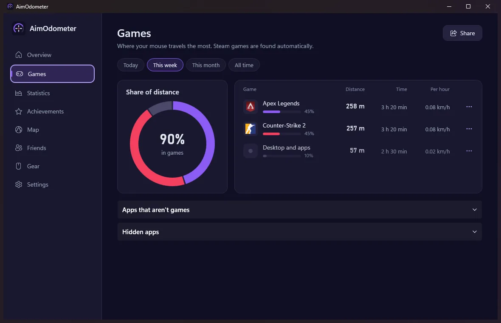
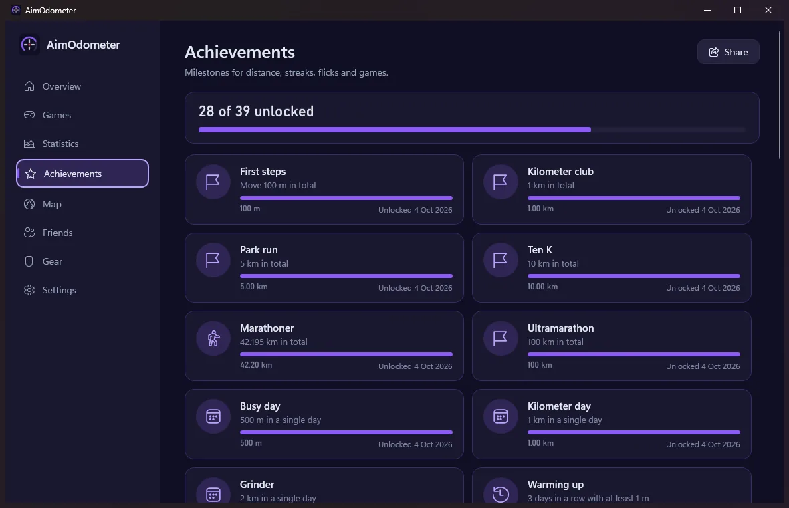
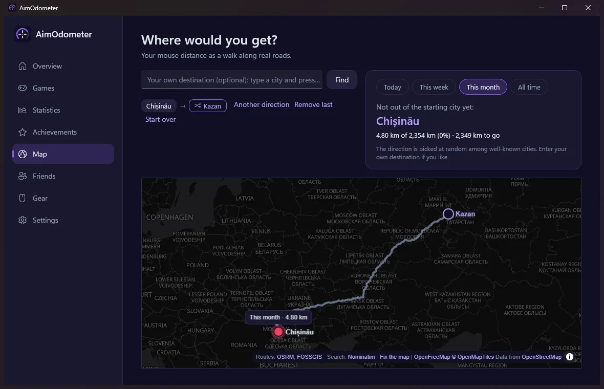
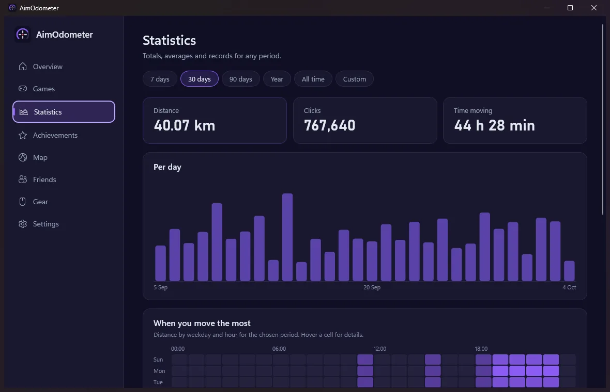

Real distance
Centimeters, meters and kilometers on the pad, per mouse, with a DPI calibration wizard (a ruler or a bank card is enough).
Free · open source · Windows 10/11
AimOdometer counts the real centimeters your mouse covers on the pad, not pixels on screen: per game, per mouse, per day. It runs quietly in the tray and turns your aim into kilometers.

Measured with Windows Raw Input from your mouse itself, so in-game sensitivity and screen resolution do not matter. Only the DPI does, and AimOdometer helps you measure it.
Centimeters, meters and kilometers on the pad, per mouse, with a DPI calibration wizard (a ruler or a bank card is enough).
Steam games are found automatically, plus 55 others (Riot, Epic, Battle.net…). See which game makes you run the most.
39 achievements: distance, streaks, flicks, night owl, per game. Never pop up during a full-screen game.
Your distance as a walk on a real map, from your city towards a famous one or wherever you choose.
Sign in through Steam to compare with your Steam friends and, if you want, the whole world.
A tiny native tracker runs in the background; the window with all the charts opens only when you need it. Updates install themselves.
AimOdometer only reads your mouse the way any mouse software does and notes which app is in front. Nothing touches the game.




AimOdometer is not code-signed yet. Click “More info”, then “Run anyway”. The source code is public on GitHub.
As accurate as the DPI you enter: measure it once in the app with a ruler or a bank card. On Windows 11 a background app gets mouse input merged at ~125 Hz, which costs about 2% while you aim fast; everything else is exact.
No. Without Steam sign-in AimOdometer only checks GitHub for updates when its window opens (can be switched off), and the map loads only after you allow it on its tab.
Statistics live in %LOCALAPPDATA%\AimOdometer. Uninstall from Windows Settings › Apps; your statistics stay unless you delete them in AimOdometer's Settings.